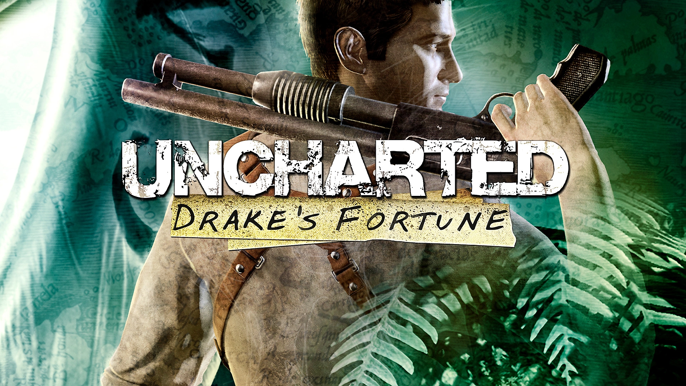

Dark Souls 3
Postado 06 Junho 2024
Dark Souls III (ダークソルIII Dāku Souru Surī?) é um jogo do género RPG de ação, o quarto da série Souls, desenvolvido pela FromSoftware e co-realizado por Hidetaka Miyazaki, o criador da série. Dark Souls III foi lançado para Microsoft Windows, PlayStation 4 e Xbox One no dia 24 de março de 2016 no Japão, e a 12 de abril de 2016 no resto do mundo. Dark Souls III recebeu aclamação por parte da critica especializada. Os elogios focarem-se sobretudo nos visuais e nas mecânicas de combate, fazendo lembrar o ritmo rápido de Bloodborne, o jogo anterior da FromSoftware. No site de análises agregadas Metacritic a versão Microsoft Windows conseguiu a pontuação de 90/100, o que indica “aclamação universal”.
Leia maisUncharted Drakes Fortune
Postado 07 Junho 2024 Uncharted: Drake's Fortune, o primeiro da série, combina acção-aventura com elementos de plataforma. Segue a aventura do protagonista Nathan Drake, suposto descendente de Sir Francis Drake, que está à procura do El Dorado na América do Sul com a ajuda da jornalista Elena Fisher e do seu amigo e mentor Victor "Sully" Sullivan. Durante o jogo eles são perseguidos por piratas liderados por Eddy Raja e mais tarde por um grupo de mercenários que têm como chefes Gabriel Roman e Atoq Navarro, a quem Sully tem uma divida.
Leia mais